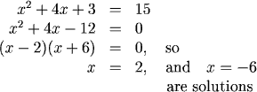
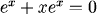
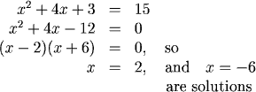
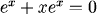
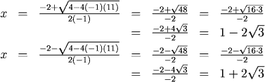
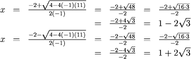

Solving by Factoring
Some equations can be put into factored form such that the product of the factors is zero. Then we can solve by using the fact that if \((a)(b) = 0\), then either \(a\) or \(b\) (or both) is zero.
Examples
Before looking at how these are solved, be sure it is clear why they are linear. Then check that you see the algebraic steps in clearing the parentheses and isolating the variable.




is never zero, so \(x=-1\) is the only solution.
Before looking at how these are solved, be sure it is clear why they are linear. Then check that you see the algebraic steps in clearing the parentheses and isolating the variable.
1. Solve for \(x\):

2. Solve for \(x\):
3. Solve:

is never zero, so \(x=-1\) is the only solution.
Solving with the Quadratic Formula
If we are unable to factor an equation and it is quadratic (the highest power of the variable is 2) we can use the quadratic formula. If
$$ax^2+bx+c=0$$
then the solutions are
$$x = \frac{-b - \sqrt{b^2-4ac}}{2a}\ or\ \frac{-b + \sqrt{b^2-4ac}}{2a}\ $$
Examples



Solve for \(x\)
This is the same as:
Which we are unable to factor using integers, so we use:

Note that we can approximate these with the decimal approximations \(x \approx -2.46\) and \(x \approx 4.46\) . We could find these directly from a graph or a calculator.
Practice
Question 1:
Question 2:
Question 2:
Return to Main
Be Careful Not to Make These Common Mistakes:
1. When solving
do not make the mistake of setting \(x + 1 =15\) and \(x + 3 = 15\). It is not true that \((a)(b) = 15\) means that \(a = 15\) or \(b = 15\) (or both). Thus we have to expand the left-hand side and set the equation to zero.
2. When solving
we might be tempted to divide both sides by \(x + 3\). However, if we do this we omit the solution \(x = -3\), because we can't divide by zero.